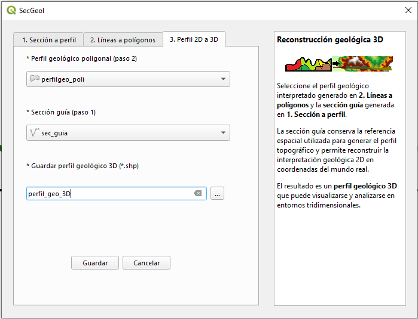
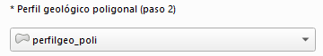
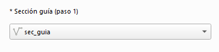

Fase 3. Vista general de la herramienta

Selección del perfil geológico poligonal
En esta fase se utiliza el perfil geológico poligonal obtenido en la Fase 2. Antes de continuar, se recomienda verificar que el campo correspondiente a las unidades geológicas se encuentre debidamente completado en la tabla de atributos.

Selección de la sección guía

En este apartado se selecciona la sección guía generada durante la Fase 1, identificada mediante el sufijo _guia.
La sección guía conserva la referencia espacial necesaria para reconstruir el perfil geológico, originalmente interpretado en coordenadas locales de distancia y elevación, en su posición correspondiente en el espacio tridimensional.
Perfil geológico poligonal 3D de salida
Como resultado, SecGeol genera una capa vectorial poligonal tridimensional que conserva la interpretación y los atributos del perfil geológico. Sus vértices se reconstruyen en coordenadas reales X, Y y Z a partir de la sección guía.
La capa resultante puede incorporarse a escenarios tridimensionales para su visualización y análisis en aplicaciones compatibles con geometrías 3D, como QGIS, ArcScene o Leapfrog.